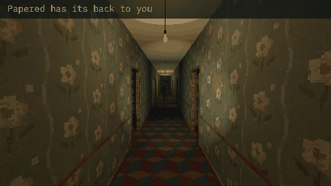

Tutorials › Make a Monster That Hears You Run
How to Make a Monster That Hears You Run in Godot 4
Footsteps that carry further the faster the player moves, silent when sneaking, muffled by every wall, heard by every monster they reach.

A monster that only sees you can be beaten by walking behind it. Give it ears and the player has to choose: sneak past slowly, or run and be heard. One script under the player makes every step a noise that carries further the faster the player moves, nothing at all when sneaking, and divides its reach for every wall between the step and a monster. Each monster it reaches hears it through its hear(position) method.
Script: footstep_noise.gd (MIT) · Godot 4.3 or newer · its folder on GitHub
How to use it
- Add a
Nodeunder your player (aCharacterBody3D) and attachfootstep_noise.gd. - Set
sneak_speed(slower is silent),walk_speedandwalk_radius,run_speedandrun_radius(how far a step carries at each pace),strideandrun_stride(a step every so many metres),land_speedandland_radius(a landing), andwall_muffle(each wall divides the reach by it). - Put your monsters in
listener_groupwith ahear(position)method; the monsters of Cordatix PSX Horror Monsters are incordatix_monsterand have it. Callmake_noise(position, radius)for other noises;noise_madetells your HUD or sound player.
What it needs
- Godot 4.3 or newer (the Compatibility renderer is enough).
- A player that is a
CharacterBody3D, and monsters with ahear(position)method.
Try it free
The Cordatix PSX Horror Free Sampler has Papered with all ten clips and the enemy script, whose hear(position) sends it to search where the noise was: the code works on it as it is.
How it was tested
In Godot 4.3 and 4.7.2, with Papered of the free sampler standing with its back to the player: sneaking two metres behind it makes no noise; walking is heard two metres away and not five; running is heard eight metres away; through a wall a run is not heard seven metres away and is heard four; landing from a 2 m drop is heard six metres away; a step comes every stride, a still frame now and then not losing it; the monster that hears goes to search towards the step without having seen the player.
The code
extends Node
## How to Make a Monster That Hears You Run in Godot 4
## Cordatix Godot 4 PSX tutorials, MIT licensed: https://github.com/GoldenSparrow-Dev/cordatix-godot-psx-tutorials
## Written for: https://cordatix.itch.io/haunted-psx-monsters
## Footsteps a monster can hear. Put this under the player (a CharacterBody3D): every step makes a noise that
## carries further the faster the player moves, and every wall between the step and a monster muffles it.
## A monster hears it through its hear(position) method: the monsters of Cordatix PSX Horror Monsters have one.
signal noise_made(at: Vector3, radius: float)
## Below this speed (m/s) the player makes no sound at all: sneaking.
@export var sneak_speed := 1.6
## Walking and running speeds (m/s) and how far each one's steps carry (m).
@export var walk_speed := 2.4
@export var run_speed := 5.0
@export var walk_radius := 3.0
@export var run_radius := 10.0
## A step every this many metres, walking and running.
@export var stride := 0.7
@export var run_stride := 1.2
## Landing from a fall at least this fast (m/s) is one noise of land_radius.
@export var land_speed := 4.0
@export var land_radius := 8.0
## Each wall between the step and a monster divides the noise's reach by this.
@export var wall_muffle := 2.0
## The group of the nodes that listen; each needs a hear(position) method.
@export var listener_group := "cordatix_monster"
var _body: CharacterBody3D
var _last := Vector3.ZERO
var _walked := 0.0
var _was_on_floor := true
var _fall_speed := 0.0
func _ready() -> void:
_body = get_parent() as CharacterBody3D
if _body:
_last = _body.global_position
func _physics_process(delta: float) -> void:
if _body == null or delta <= 0.0:
return
var pos := _body.global_position
var moved := Vector3(pos.x - _last.x, 0.0, pos.z - _last.z).length()
_last = pos
var on_floor := _body.is_on_floor()
if not on_floor:
# the fastest it fell, for the landing
_fall_speed = maxf(_fall_speed, -_body.velocity.y)
elif not _was_on_floor:
if _fall_speed >= land_speed:
make_noise(pos, land_radius)
_fall_speed = 0.0
_was_on_floor = on_floor
if not on_floor:
return
var speed := moved / delta
if speed < sneak_speed:
return # sneaking or standing: silent, and the stride so far waits
_walked += moved
if _walked >= (run_stride if speed >= run_speed else stride):
_walked = 0.0
make_noise(pos, loudness(speed))
## How far a step at this speed carries: nothing when sneaking, walk_radius at walking pace, up to run_radius.
func loudness(speed: float) -> float:
if speed < sneak_speed:
return 0.0
var t := clampf((speed - walk_speed) / (run_speed - walk_speed), 0.0, 1.0)
return lerpf(walk_radius, run_radius, t)
## A noise at `at`: every listener it reaches, walls counted, hears it. Call it for a door slam or a dropped can too.
func make_noise(at: Vector3, radius: float) -> void:
noise_made.emit(at, radius)
for m in get_tree().get_nodes_in_group(listener_group):
if m == _body or not m is Node3D or not m.has_method("hear"):
continue
var reach := radius / pow(wall_muffle, _walls(at, m))
if at.distance_to(m.global_position) <= reach:
m.hear(at)
## How many walls stand between the step and the listener: one ray, each wall it meets left out of the next try.
func _walls(at: Vector3, m: Node3D) -> int:
var space := _body.get_world_3d().direct_space_state
var from := at + Vector3.UP * 0.3
var to := m.global_position + Vector3.UP
var skip: Array[RID] = [_body.get_rid()]
if m is CollisionObject3D:
skip.append(m.get_rid())
var n := 0
while n < 4:
var q := PhysicsRayQueryParameters3D.create(from, to)
q.exclude = skip
var hit := space.intersect_ray(q)
if hit.is_empty():
break
n += 1
skip.append(hit["rid"])
return n
The devlog and the pack
The step-by-step walkthrough comes as a devlog on itch.io on 20 November 2026; this page is the tutorial until then. It is written for Cordatix PSX Horror Monsters, a PS1-style asset pack by Cordatix for Godot 4, Unity, Unreal and Blender.